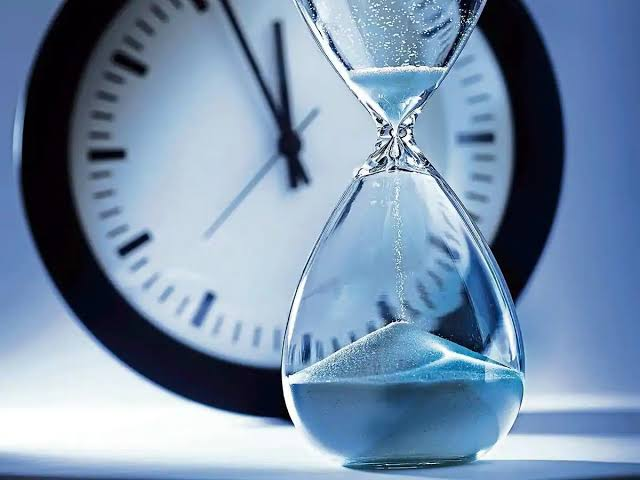

Why Patience Is Your Greatest Growth Tool.

In a world that glorifies speed, It's easy to feel like you're falling behind. The pressure to "make it" quickly, to show results fast, or to have everything figured out before age 25, can be overwhelming. But what if the most powerful thing you can do right now isn't rushing, but learning to wait well?
Patience. It sounds like something soft and quiet, almost passive. But in reality, patience is one of the strongest tools you can carry through life. Not because it makes things happen faster, but because it shapes the kind of person you're to become while waiting.
I've come to see that the real work of growth happens in the waiting seasons. The silent, often invisible moments where you keep showing up, keep doing your part, even when there's no applause or visible progress. That's where your roots are digging deep. That's where your character is beign built.
Patience teaches you things that success never can. It teaches you to endure without becoming bitter. It stretches your capacity for faith. It humbles your pride and quiets your need for constant validations. Most importantly, it reminds you that not everything good comes quickly, and not everything quick is good.
Sometimes, the waiting is actually the training. It's the place where God fine-tunes your heart, dvelops your vision, and prepares you for what's ahead. If God gives you everything prayed for right now, you might not even be ready to carry it. Patience is him saying "I love you too much to give you something before you are ready"
And here's the truth: you are not wasting time. You are becoming. Every silent day you choose to keep going, everytime you hold back from rushing into something just to prove a point, you're growing. Slowly, deeply, and meaningfully.
So, don't despise your season of patience.
Embrace it. Let it do it's perfect work in you. The growth might not be loud, but it's real. And when your moment finally comes, you'll walk in into it with strenght, clarity, and depth that can only come from waiting well.
Because patience isn't just about waiting, it's about becoming.
Final Thoughts
Growth is rarely loud. It's quiet, patient, and often unnoticed—until it speaks through your strength, your depth, and your peace. Patience isn't weakness; it's wisdom. And if you choose to embrace it, you'll find that you're not just waiting for something—you're becoming someone.
Thanks for reading.
If this resonated with you, please do well to share it with someone who might need it.